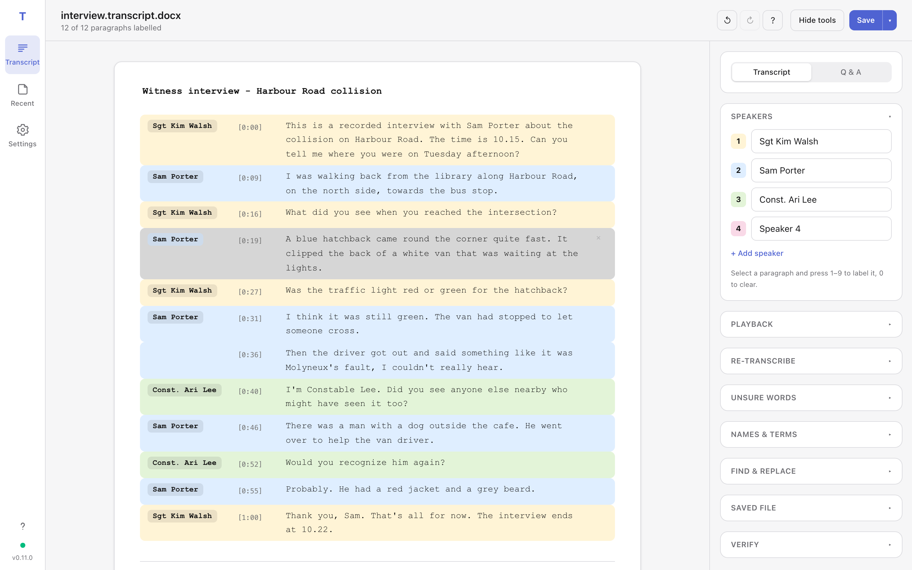
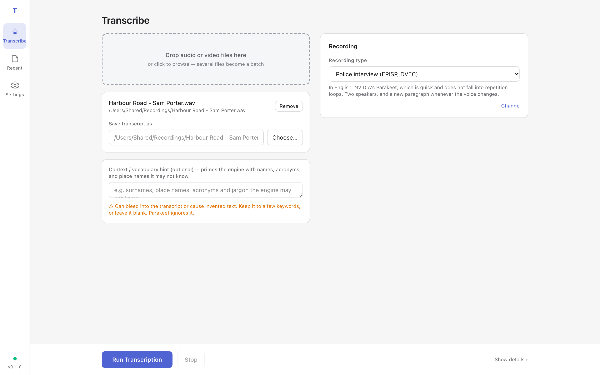
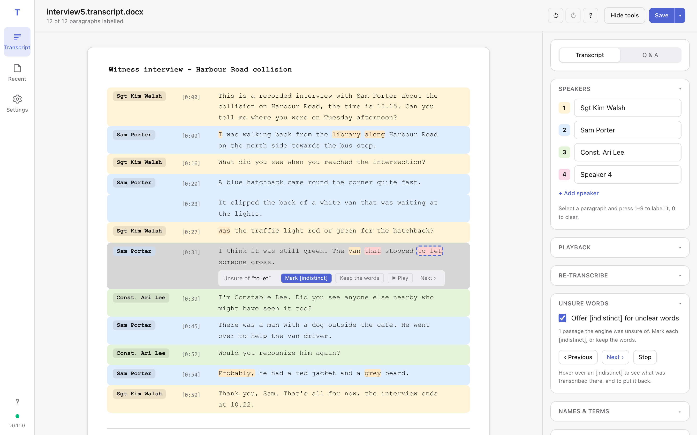
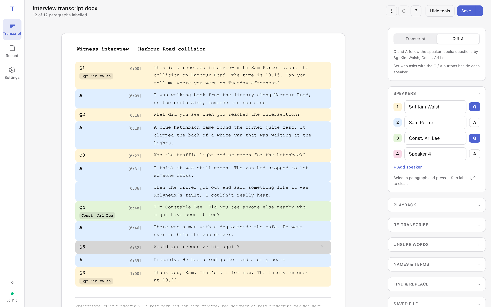

Private by design
Speech recognition runs on your computer. Recordings and transcripts never leave it — there is no account and no cloud.
Transcribr turns a recording into a transcript you can check, label and save as a Word document — with the speakers, the timestamps and the parts it was unsure of all in view. Nothing is uploaded.

Speech recognition runs on your computer. Recordings and transcripts never leave it — there is no account and no cloud.
The transcript appears as the recording is processed. Start labelling speakers and correcting text before it has finished.
Switch to a Q&A layout numbered like a record of interview. Choose who asks and who answers; a change of questioner is named.
Words the engine was unsure of are shaded, and offered — never forced — as [indistinct]. Hover a marker to see what was heard, and put it back.
Right-click a paragraph to transcribe it again with a different engine. Split, join and edit without leaving the keyboard.
Save as Word, PDF or text. Choose a plain, court (numbered lines) or record-of-interview layout, and certify the transcript as checked.
Download the installer for your computer from below and open it. On a Mac it is signed and notarised by Apple, so it installs like any other app. On Windows, SmartScreen may warn that the installer is new: choose More info → Run anyway.
The first transcription downloads the speech model it uses (between 0.5 and 3 GB, once). After that, Transcribr works offline.
Drop an audio or video file onto the window, or click to browse. Pick the recording type — police interview, phone call, hearing, meeting, body-worn video or dictation — and Transcribr sets the engine, the number of speakers and how it breaks paragraphs to suit. Change shows the detail if you want to adjust it.
Drop several files at once to transcribe them as a batch.

Press Run transcription. The transcript fills in as the engine works; anything above the grey tail is ready to correct.
Select a paragraph and press 1–9 to give it a speaker; name the speakers in the tools panel. Press P to play the paragraph, Enter to edit it, and double-click a word to split the paragraph there. ? lists every shortcut.
Open Unsure words and step through the passages the engine was least sure of. Listen, then mark each one [indistinct] or keep the words. A marker remembers what was heard: hover it to see, and Restore to put it back.
If a whole passage is wrong, right-click it and choose Re-transcribe.

For an interview, switch the layout to Q & A. Questions are numbered and answers marked, the way a record of interview reads. Use the Q / A buttons beside each speaker to say who asks; when someone else takes over the questions, the transcript names them.

Choose the Word layout under Saved file — plain, court (every line numbered, double spaced) or record of interview — and press Save. The menu beside it saves without speaker labels, as a new revision, or exports a PDF.
Once you have checked the transcript against the recording, enter your name under Verify: the saved document then says who checked it. Until then it carries a warning that it may not have been checked by a person.
The latest release, free of charge.
Not sure which Mac you have? Apple menu → About This Mac: “Chip: Apple M…” is Apple Silicon, “Processor: Intel” is Intel. Requires macOS 11 or later; about 3 GB of free space for the speech models. By installing you accept the end-user licence agreement. Earlier versions are on the releases page.
Transcribr does its work on your computer. Your recordings and transcripts are never sent to us or to anyone else, and there is no account to create.
It connects to the internet for two things only, neither of which carries your recordings or transcripts: downloading a speech model the first time it is used, and checking for updates — which you can turn off in Settings.
Transcribr makes machine transcriptions, which can contain mistakes. Check every transcript against the recording before relying on it.